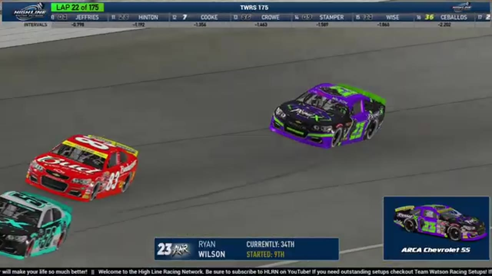

Jason Branch
Team assignment not stated in the structured owner record.
A REVIEWED STORY FILE
- Official files
- 5
- Central editions
- 1
- Exact tape cues
- 5
- Accepted podiums
- 0
Jason Branch appears in 5 official HLRN broadcast files across Seasons 1, 2. The current result ledger does not assign this driver a supported top-three finish. A consistently stated team affiliation remains open for owner review. The currently indexed source window runs from December 8, 2025 through July 20, 2026.
Highline Central supplies 1 bounded race edition, while the primary chapter index supplies 5 direct jump points. Daytona is the most frequent named track in the current appearance ledger. The densest direct-tape categories are incident (3 cues) and battle (1 cue). Those counts describe where the name is easiest to find; they are not fault, pace, or performance grades. A source-attributed car frame is published with its original video and timestamp. That is the current discovery map for Jason Branch.
Official name signals are used for discovery only. They do not become starts, points, incident counts, or an ability grade. This page is deliberately detailed about the tape and restrained about the unavailable competition record. No Highline Live bonus file is currently attached to this identity. The displayed name is labeled transcript normalized; that status remains visible so an owner roster can strengthen or correct the identity without rewriting the evidence trail. Those boundaries define Jason Branch's public HLRN file.
5 featured race-tape cues
These are discovery routes into complete HLRN broadcasts, not performance grades or inferred results.
- S2 / R2 · STAGE
A stage-scoring discussion at Iowa
S2 / R2 at 1:51:42: The broadcast enters a stage-scoring discussion at Iowa with Trevor Haley, Trace McDowell, and Jason Branch in the scoring call. The clip preserves the on-air timing or points call without promoting it into a complete stage result; the accepted feature result ledger remains separate.
Iowa - S2 / R3 · BATTLE
Jason Branch saves a wall slide without drawing a caution
Jason Branch brushes the wall, spins toward Ethan Moreno, and keeps the car off the grass before safely rejoining. HLRN replays what it calls a major save and explicitly confirms that no caution appeared.
Chicagoland - S2 / R4 · INCIDENT
A late return to the racing line triggers EchoPark's next pileup
HLRN reviews a driver washing through the quad oval and coming back down across the No. 8's nose after surrendering the lane. The contact starts a massive wreck; the transcript does not safely identify the first car.
EchoPark Speedway - S2 / R2 · INCIDENT
An unidentified spin sends Iowa under caution
S2 / R2 at 1:38:10: The caution sequence centers the replay call on Vincent Guerrero and Jason Branch. This is a source-bounded incident window; it preserves what the booth reviews without assigning unsupported fault.
Iowa - S2 / R1 · INCIDENT
Daytona's replay rules Jason Branch out of the three-wide crash
The pack goes three wide and breaks apart as HLRN first considers Jason Branch. The replay immediately rejects that identification, leaving the initiating driver open rather than publishing the first guess as fact.
Daytona
Recent editions connected to Jason Branch
Verified team history is not consistently stated. No position-specific top-three result is currently accepted. Name normalization remains reviewable against owner records.